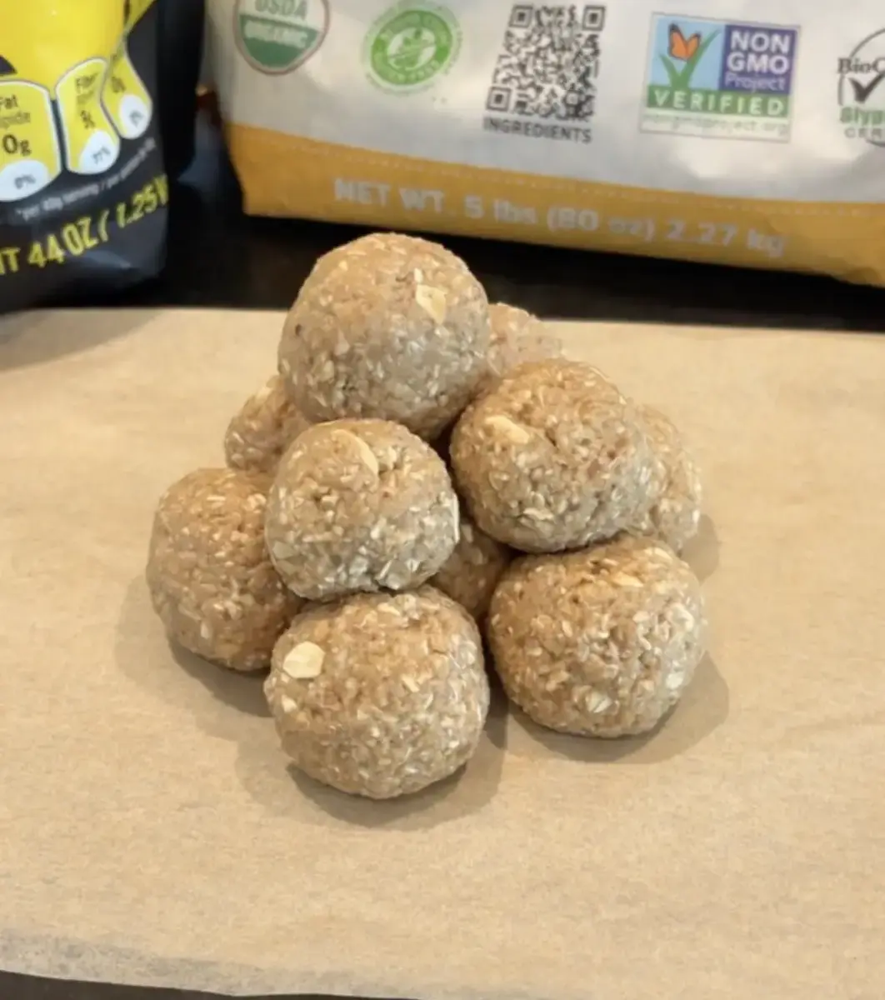

Recipe of the house
Delicious Lemongrass Basil Chicken Stir Fry
His own wok dinner — chicken, lemongrass and basil, straight from Papito's kitchen. The first recipe that ever went on the site.
See Recipe
His own wok dinner — chicken, lemongrass and basil, straight from Papito's kitchen. The first recipe that ever went on the site.
See Recipe
Air-fryer crispy, black beans and brown rice — no deep fry.

Ritz soaked in milk, sweet-chili ketchup glaze, twice.

Chicken and andouille, 8 minutes under pressure.

The house batter — one cup of flour, one cup of milk, done.

Dates, oats and maple sugar — pocket fuel for long rides.

Homemade gel, real fruit, no maltodextrin powders.

Gels, bars, rice cakes and recovery drinks for the bike — Drew Addis's ride food plus Papito's own bars, sorted into Solid and Liquid. Every one opens on its own page.
Discover all the recipesPapito — every day
New recipes when Papito adds them. (Demo box — it doesn't send anything yet.)